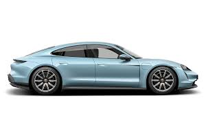
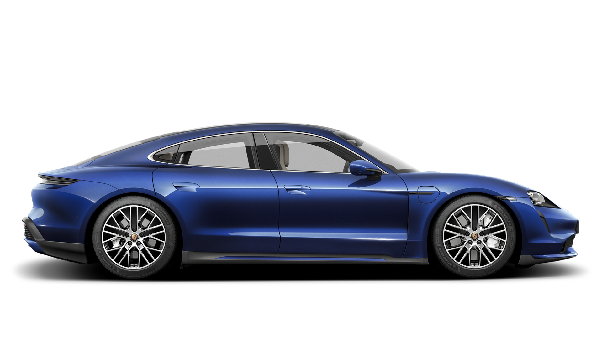

The Porsche Taycan is an all-electric car made by German automobile manufacturer Porsche. The concept version of the Taycan, named the Porsche Mission E, debuted at the 2015 Frankfurt Motor Show. The Taycan was revealed fully production-ready at the 2019 Frankfurt Motor Show. As Porsche's first series production electric car, it will be sold in several variants at different performance levels, and may spawn further derivatives in future models. Around 4,480 Taycans were delivered in the first half of 2020, its debut sale year. It is the first all-electric car designed and produced by Porsche.
The name "Taycan" roughly translates from Turkish as "lively young horse", in reference to the steed of the Stuttgart coat of arms on the Porsche crest.
Porsche named the high performance models Turbo and Turbo S despite the absence of a turbocharger, following the tradition set by older high performance Porsche derivatives.
The Taycan's interior features Porsche's first fully digital instrumentation, with up to four digital displays, including a curved, free-standing 16.8-inch configurable driver's display. A 10.9-inch screen to the right of the instrument cluster is the car's infotainment center. An optional screen to the right of the infotainment screen allows the front passenger to customise the infotainment system.
The exterior styling, by former Porsche Exterior Designer Mitja Borkert, is strongly influenced by the Mission E concept car, retaining most of its design elements except the "suicide doors" and B pillars. Design features of the Taycan include a retractable rear spoiler, retractable door handles, and an advanced regenerative braking system. Taking full advantage of its drivetrain layout, the Taycan combines the fundamental short-nosed front proportions of traditional Porsches with the stretched proportions of modern front-engine models towards the rear, providing clear design links to existing models.
The Taycan's body is mainly steel and aluminium joined by different bonding techniques. The body's B pillars, side roof frame and seat cross member are made from hot-formed steel, while the bulkhead cross member is made from boron steel to improve safety. The shock absorber mounts, axle mounts and rear side members are forged aluminum; and all body panels, except the front and rear bumpers, are also made from aluminum to reduce weight. 37% of the car is aluminium.
The Taycan uses a new battery-electric all-wheel-drive drivetrain with a permanent-magnet synchronous motor on each axle. At the front, power is sent to the wheels through a single-speed gearbox (8.05:1 gear ratio); and at the rear, through a two-speed transmission and a limited slip differential. The gearbox has a short planetary first gear (15.5:1) providing maximum acceleration, and a long-ratio second gear (8.05:1) delivering top speed and efficiency.
Taycan 4S
Taycan Turbo
Taycan TurboS